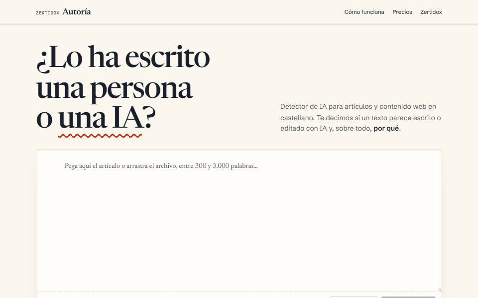

In productionEn producción
Zertidox Autoría
Detects AI-written text in Spanish web articles and explains why a text looks written or edited by AI.
Detecta textos escritos con IA en artículos web en castellano y explica por qué lo parecen.
AI Our own classifier, trained on a Spanish corpus.Clasificador propio, entrenado con un corpus en castellano.
Next.js, browser extensionextensión de navegador
zertidox.com/autoria